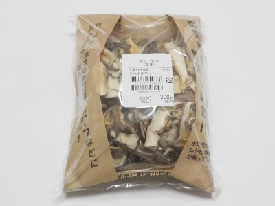

島根県西新町1丁目2453-5
更新日 : 2026/10/10

スーパーでシイタケ買って、カットして冷凍保存して使うんですがちょっと面倒です。
カットしてある乾燥しいたけは簡単に使えていいですよね。使い切ったらまた買おうかな。
税込み324円で沢山入ってます。ラピタ本店の産直コーナーで買いました。
【おいしいものを食べよう。】【たくさん寝よう。】
【ソロ活をしよう!】【季節感のあることをしよう。】【動画視聴はほどほどに。】【当サイトの全てのコンテンツは無断転載禁止です。】